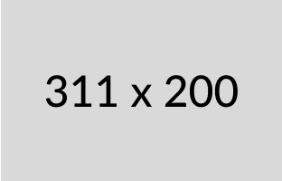

Set Your Finger Print
Add a finger print to make your account more secure.
Please put your finger on the finger print scanner to get started

Your account is ready to use. You will be redirected to the next page in a few seconds.